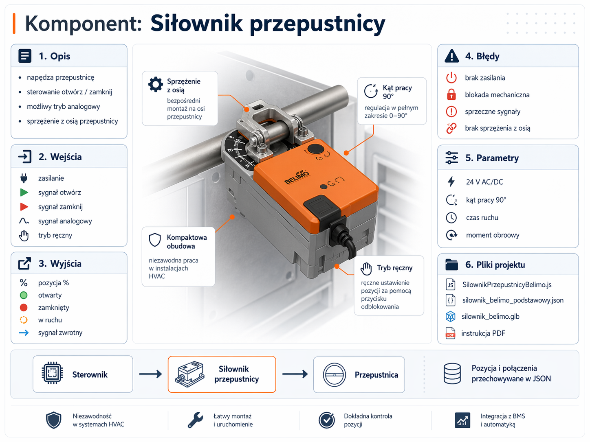

Interaktywny widok demo
Kliknij element na liście albo w scenie. Po prawej zobaczysz szczegóły i błędy.
Przytrzymaj i przeciągnij, aby obrócić widok
Karta komponentu: siłownik przepustnicy
To przykładowy komponent bazowy do dalszej rozbudowy. W docelowym systemie jego model 3D, logika, dokumentacja i konfiguracja są rozdzielone, ale powiązane jednym identyfikatorem.
24 V AC/DC
kąt pracy 90°
wejścia / wyjścia
symulacja błędów

Proponowana struktura repozytorium
repozytorium-demo/
├── index.html
├── style.css
├── js/
│ └── app.js
├── dane/
│ └── komponenty-demo.json
└── assets/
├── silownik-infografika.png
├── metadane/
│ └── asd_github_ready.json
└── modele/
└── silownik_belimo/
└── asd_github_ready.glbTa wersja jest przygotowana specjalnie pod GitHub Pages, więc działa jako statyczna strona bez backendu.